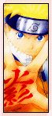

| » Uzumaki Naruto ;
Well, when Naruto first met Lee, he had sort of the same reaction as Sakura. He couldn't hold back as he shouted "weirdos" and "thick brows" at Lee. Later on, Naruto continues to refer to Lee by "Thick Brows" instead of his actual name. Lee doesn't seem to mind this though. ^^ Naruto had a brief clash with Lee, after which he was knocked out almost instantly. He harbored no hard feelings though. From then on, Naruto figured Lee was a pretty powerful guy, being able to beat Sasuke. There was more to him than his weird look and super-thick eyebrows. Slowly, Naruto started cheering for Lee, especially after encountering Gaara. During the Chuunin exam preliminary fights, he was cheering for Lee all the way. Lee and Naruto actually share the same thoughts when it comes to dropouts beating geniuses. Both wholeheartedly believe that one doesn't have to be 'gifted' in order to become a good ninja. Both also won't stand to listen to the gifted talk trash about dropouts, and both are very eager to prove them wrong. This kind of thinking played a big part in both Naruto and Lee's work ethic. Their determination is what drives them to work harder and keep learning. In this way, Naruto and Lee are very similar. Lee can be seen as a role model for Naruto, solid proof that a hard worker can become an extraordinary ninja without any special abilities. Through Lee, Naruto may learn many things, and Lee is inspiration for him to work even harder now. When Naruto fights Neji in the Chuunin final matches, he has several flashbacks of how hard Hinata and Lee tried. These flashbacks made him stronger than ever, and gave more incentive for him to beat Neji. To Naruto, Lee is a source of inspiration, a great comrade, and a reminder that hard work pays off. « reverse |
PRELUDE GENERAL Naruto Terms Chakra LEE First Glance Personality Techniques Fighting Style Transition Weaknesses Analysis RIVALRY vs. Sasuke vs. Neji vs. Gaara vs. Sound vs. Kimimaro RELATIONS Maito Gai Teammates Sakura Naruto EXTRAS Symbolism Seiyuu Quotations References EDEN Reasons Images Wallpapers Fanworks Graphics EPILOGUE Updates Linkage Credits Joined Contact Guestbook |